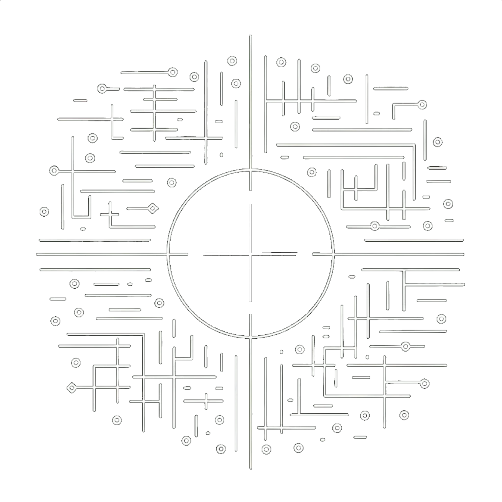
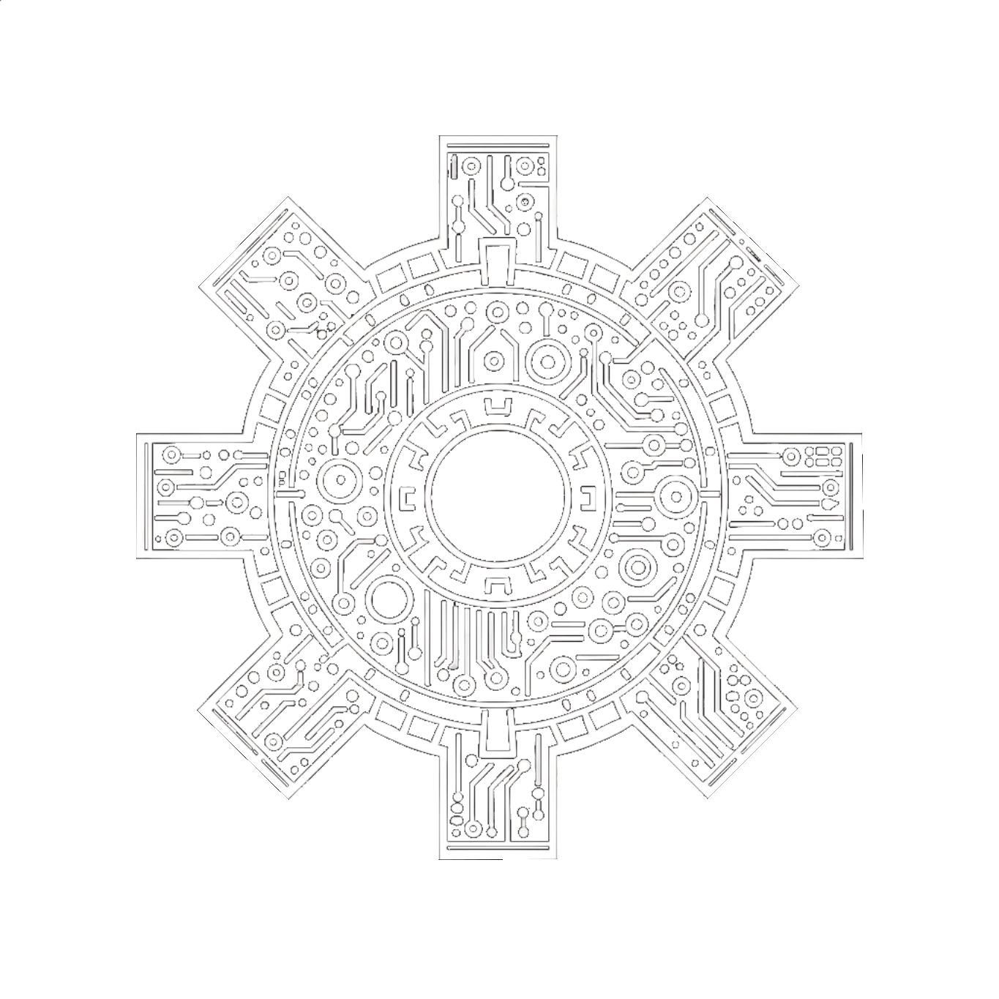
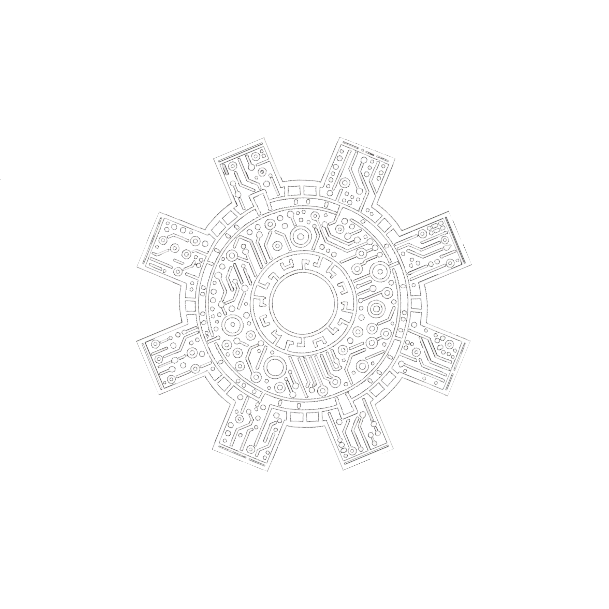

REVENUE SHARE
REVOLUTION
>_SniperDAO represents an opportunity to tap
into Sniper Bot users gains without needing extensive experience or years of accumulated knowledge.
We are a DAO, our main focus is to benefit the community by sharing profits
from SNIPER BOT activities and other ventures in the cryptocurrency market.
SniperDAO is a bep20 token, BSC based.
0xef113882595e69b41f80eb133ec1cf764b57b466

>_SniperDAO represents an opportunity to tap
into Sniper Bot users' gains without needing extensive experience or years of accumulated knowledge.
It offers a way to participate with lower risk and less initial capital.
We are a DAO, our main focus is to benefit the community by sharing profits
from SNIPER BOT activities and other ventures in the cryptocurrency market.
SniperDAO is
a bep20 token, BSC based.
0xef113882595e69b41f80eb133ec1cf764b57b466
>_The Sniper Bots are renowned for
generating legendary gains for their operators. Some of the most profitable
transactions in the crypto space, and probably in the entire financial world, have been
executed
by these
skilled operators and their bots. Accessing these tools is not easy; licenses are expensive,
node rentals
demand exorbitant fees, and the risks are often very high.
To benefit from the 'Snipers World', a considerable amount of assets in your portfolio can
be
required.
High levels of knowledge and experience are essential to manage these operations
successfully.
When executed with precision, the path to substantial rewards is clear.
However, one misstep can leave your capital vulnerable to a predatory market.

What we can do?
We have one of the most powerful tools for sniping new token launches on the BSC.
We also have years of expertise in the area and remarkable integrity, vouched for by
many players in the crypto space.
What we will do?
We will distribute 25% from the profits of the snipe
operations to eligible holders (check whitepaper for more info).
How we gonna do?
Through transaction fees, we obtain resources for
the organization's treasury. With these resources, we use capital for operations.
From the profits, we obtain more resources for future operations, fund the organization,
and distribute profits to eligible holders.
MECHANICS
>_SniperDAO-Terminal
SIMULATE-OPERATION
Collecting fees from transactions to treasury...
Distributing to Operators Vault...
Setting new target...
WE SNIPE IT!
COLLECTING PROFITS...
Distributing profits 25% to each sector:
- Revenue Share wallet: Distribution to eligible wallets
- Liquidity Wallet: Buy back tokens and add to liquidity
- Operators Vault: Fund the next operations
- Ecosystem Treasury: Fund operational costs
--Simulation executed successfully


>_SniperDAO-Terminal
SIMULATE-OPERATION
Collecting fees from transactions to treasury...
Distributing to Operators Vault...
Setting new target...
WE SNIPE IT!
COLLECTING PROFITS...
Distributing profits 25% to each sector:
- Revenue Share wallet: Distribution to eligible wallets
- Liquidity Wallet: Buy back tokens and add to liquidity
- Operators Vault: Fund the next operations
- Ecosystem Treasury: Fund operational costs
--Simulation executed successfully
TOKENOMICS
>_SniperDAO - sDAO
Total supply of 10.000.000 units (10 M).
9.500.000 tokens added to liquidity pool,
5 BNB initially added to the liquidity pool.
500.000 tokens sent to team.
Each swap transaction has a 6% fee.
This fee represents 6% allocated for any project
needs.
Contract Address on BSC:
0xef113882595e69b41f80eb133ec1cf764b57b466
TOTAL SUPPLY:
10.000.000 (10M)
- Liquidity
- Team
TOKENOMICS
>_SniperDAO - sDAO
Total supply of 10.000.000 units (10 M).
9.500.000 tokens added to liquidity pool,
5 BNB initially added to the liquidity pool.
500.000 tokens sent to team.
Each swap transaction has a 6% fee.
This fee can be used for any project needs.
Contract Address:
0xef113882595e69b41f80eb133ec1cf764b57b466
TOTAL SUPPLY:
10.000.000 (10M)
- Liquidity
- Team
WHITEPAPER
Remember: never risk more than you are willing to lose.
Be cautious and well-informed.
We will not take actions that lead to "fomo" behavior, and we will be transparent and honest about the activities we undertake, without ever bringing false hopes, promises of profits, or anything of the sort.
"I have read the terms of use and fully agree with the content"
ROADMAP
>_ Loading...
Phase 1 - Foundations and pre-launch
1.1 - Initial research and development:
- Concept creation, definition of fundamentals, objectives, and other core foundations of SniperDAO.
1.2 - Core team formation:
- Gathering partners to build the core team.
1.3 - Tools research and development:
- Research and start of development from system for profit-share participation.
- Development, improvement, and integration of essential tools for the project.
- Development of smart contracts involved in the project.
1.4 - Marketing and identity development:
- Structuring the visual identity.
- Beginning promotional activities for the project.
- Preparation for the launch.
- Whitepaper v1.
1.5 - Launch:
- Deployment of contracts on the BSC mainnet.
- Liquidity pool added at PancakeSwap.
1.6 - Beginning of main activities:
- Initiation of sniping activities and the beginning of the formation of the SniperDAO treasury and profit-sharing.
Phase 2 - Post-launch and initial activities
2.1 - New developments and enhancements:
- Development of more new tools and improvements to existing ones.
- Start of the development of the voting system for the DAO.
- GitBook of the project and bots.
- Website V1.
2.2 - Expansion of marketing and audits:
- Hiring specialized services to increase visibility.
- Audit of contracts and codes.
2.3 - Telegram bot public testing:
- Providing for the holders the access to BETA testing to
the SnipeDAO bot in telegram.
2.4 - Transparency:
- Start of the development of transparency tools and monitoring of SniperDAO operations.
- Reports about the funds raised and activities carried out.
- Show the amount of profit distributed.
Phase 3 - Continuous development, updates, DAO voting
3.1 - DAO voting system:
- First DAO poll to determine the next steps of the project.
- Definition of the reward distribution schedule.
- Survey of the next utilities to be delivered.
3.2 - Listings:
- Listing processes on trackers (e.g., CMC, CG)
- Beginning of listing processes in many CEX.
3.3 - Disclosure of results and future plans:
- Report from operations, results, and other items.
- Promotional events with giveaways, challenges, and other activities proposed to the holders, with exclusive benefits.
- DAO collective decisions for the next steps.
- Release of the next phases of the RoadMap.
Phase 4 - UNDER CONSTRUCTION
- Website V2
- Whitepaper V2
Contact Us
If you have questions, suggestions, or need assistance, feel free to reach us directly at sniperdao@proton.me or in our telegram groups.